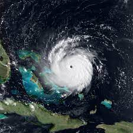
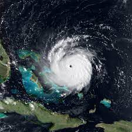

Hurricane Irma
On Sunday morning, September 10th, Irma strengthened to a Category 4 hurricane as it accelerated toward the Florida Keys. The eye made landfall in Cudjoe Key as a 130 mph Category 4 at 9:10am. The center of Irma then made landfall in Marco Island at 3:35pm that afternoon as a Category 3 with 115 mph winds. The center moved into central Florida overnight and into northern Florida later on Monday as it weakened.
Storm History
South Floridians began paying very close attention to Irma’s forecast up to a week or more prior to landfall in South Florida. From about 5 days before landfall onward, the NHC forecast was consistent on a threat to South Florida. Residents and visitors swarmed grocery stores, gas stations and department stores to stock up on essential supplies. The good news was that most South Floridians took the threat from Irma seriously. The bad news was that grocery stores quickly ran out of food and water, while most gas stations had run out of fuel 1 to 2 days before Irma hit.
Damages & Facts
- Category 5 Hurricane
- 80 mph (285 km/h)
- Damage: $77.16 Billion (2017 USD)
- Death Toll: 134
- Irma Formed: August 30th, 2017 Irma Dissipated: September 13th, 2017